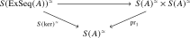
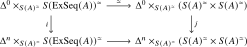
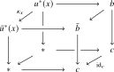
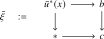

Lemma 20.6.3. Let \(A\) be a Waldhausen category in which weak equivalences all are isomorphisms. The functor \[ (\ker,\coker)\colon\ExactSeq(A)\to A\times A \] induces a morphism of simplicial animae \[ \Scons(\ExactSeq(A))^\simeq\to \Scons(A)^\simeq\times\Scons(A)^\simeq \] that yields an isomorphism after geometric realization.
Proof
We have a commutative triangle of the form
  whereas the right hand side is the collection of pairs of objects of the form \((*,x'')\).
It is clear that assigning \(x''\) to each pushout square as above is an equivalence.
Let us consider the general case. Let us write \(x_0\colon\Delta^0\to \Scons(A)\)
for the restriction of \(x\) along \(\{0\}\hookrightarrow\Delta^n\).
This induces a pullback square of the form
whereas the right hand side is the collection of pairs of objects of the form \((*,x'')\).
It is clear that assigning \(x''\) to each pushout square as above is an equivalence.
Let us consider the general case. Let us write \(x_0\colon\Delta^0\to \Scons(A)\)
for the restriction of \(x\) along \(\{0\}\hookrightarrow\Delta^n\).
This induces a pullback square of the form
What precedes tells us that \[ \Delta^0\times_{\Scons(A)^\simeq} \Scons(\ExactSeq(A))^\simeq\simeq\Scons(A)^\simeq\, . \] There is a canonical map \[ p\colon \Delta^n\times_{\Scons(A)^\simeq} \Scons(\ExactSeq(A))^\simeq\to \Scons(A)^\simeq) \] obtained through the second projection \[ \Delta^n\times_{\Scons(A)^\simeq} \Scons(\ExactSeq(A))^\simeq \to \Scons(\ExactSeq(A))^\simeq \] followed from the map \[ \Scons(\ExactSeq(A))^\simeq\to \Scons(A)^\simeq \] induced by the functor \[ \coker\colon\ExactSeq(A)\to A\, . \] It is immediate to see that the vertical map \(i\) on the left hand side of the square above is a section of \(p\). It suffices now to prove that the other composite \(i\circ p\) simplicially homotopic to the identity.
Let \(h\colon\Delta^1\times\Delta^n\to\Delta^n\) be the map induced by the functor expressing the fact that \(n\) is a terminal object of \([n]\).
Keeping track of the notations of Remark 20.6.2,
for any maps \(u\colon [m]\to [n]\) and \(v\colon[m]\to [1]\) to the unique natural transformation
\[
\kappa_{u,v}\colon u\to \bar u
\]
produces a canonical map
\[
\kappa_{u,v,x}\colon u^*(x)\to \bar{u}^*(x)
\]
functorially in \((u,v)\).
A term of the category \(\Delta_{/X}\) for
\[
X=\Delta^1\times \Big(\Delta^n\times_{\Scons(A)^\simeq}\Scons(\ExactSeq(A))^\simeq\Big)
\]
literally is a tuple of the form \((u,v,\xi)\) with \((u,v)\) as above any \(\xi\) a tern of the category of
pushout square in \(A\) of the form below.
  Such a term \(\xi\) is thus canonically the back face of a term of the category of
commutative cubes in \(A\) of the form
Such a term \(\xi\) is thus canonically the back face of a term of the category of
commutative cubes in \(A\) of the form